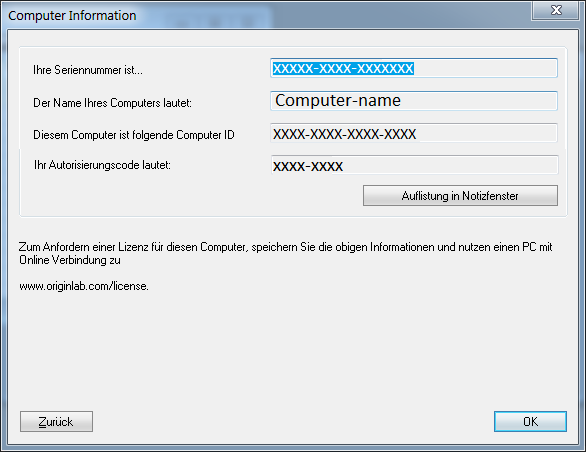

Lizenzaktivierung für rechnergebundene Gruppenlizenzen (Node-Locked)
Multi-NodeLocked-Activation
- Um den Lizenzprozess einer Node-Locked-Lizenz abzuschließen, müssen Sie an dem Computer mit einem Konto angemeldet sein, welches Administratorrechte hat.
- Wenn das Betriebssystem Windows 10, 8.1, 8, 7 oder Vista ist, müssen Sie mit der rechten Maustaste auf das Origin-Programmsymbol klicken und die Option Als Administrator ausführen auswählen.
- Sobald der Lizenzprozess abgeschlossen ist, wird die Lizenz auf diesem Computer gespeichert. Internetzugang ist dann nicht mehr erforderlich.
Falls Ihr Computer Internetzugriff hat[bearbeiten]
 Sehen Sie das Video-Tutorial an - Rechnergebundenes Origin (Node-Locked) auf einem Computer mit Internetzugriff lizenzieren
Sehen Sie das Video-Tutorial an - Rechnergebundenes Origin (Node-Locked) auf einem Computer mit Internetzugriff lizenzieren
- Starten Sie Origin. Es wird ein Lizenzierungsdialog geöffnet, der Optionen zum Anfordern Ihrer Lizenz enthält.
- Wählen Sie die erste Option Jetzt eine Lizenzdatei online anfordern. Dieser Computer hat Internetzugriff. Klicken Sie dann auf die Schaltfläche OK.

- Ein Dialog Computerinformationen wird geöffnet und zeigt Ihre Computerdetails, die an die OriginLab-Webseite weitergegeben werden. Klicken Sie auf OK.

- Ihr Webbrowser wird auf einer Anmeldungsseite der OriginLab-Webseite geöffnet. Melden Sie sich an, wenn Sie bereits über ein Konto verfügen, oder erstellen Sie sich ggf. ein Konto.
- Nachdem Sie sich angemeldet haben, werden Sie gebeten, Ihren Zugangscode (Access Code) einzugeben. Wenn Sie Ihren Zugangscode nicht kennen, wenden Sie sich an Ihren Origin-Administrator. Klicken Sie auf Weiter.

- Ihre Lizenz wird erzeugt und auf der Webseite angezeigt. Kopieren Sie den gesamten Lizenztext in das Textfeld.
- Gehen Sie jetzt zurück zu Origin und fügen Sie den Lizenztext in den Dialog Lizenz eingeben ein. Klicken Sie auf OK.
Falls Ihr Computer keinen Internetzugriff hat[bearbeiten]
Sehen Sie das Video-Tutorial an - Rechnergebundenes Origin (Node-Locked) auf einem Computer ohne Internetzugriff lizenzieren
Wenn Ihr Computer keinen Internetzugriff hat, benötigen Sie Zugriff auf einen anderen Computer, der Zugang zum Internet besitzt. Sie können eine Lizenz über den Computer mit Internetzugriff abrufen. Dazu benötigen Sie die ID des Origin-Computers, den Authorization Code (Autorisierungscode) und die Origin-Seriennummer des Computers ohne Internetzugang.
- Wählen Sie in Origins Lizenzdialog die Option "Jetzt eine Lizenzdatei anfordern. Dieser Computer hat keinen Internetzugang." Klicken Sie auf OK.

- Der Dialog, der geöffnet wird, zeigt Origin-Seriennummer, Computername, Computer-ID und Authorization Code an. Klicken Sie auf Dump to Notepad, um diese Informationen als .txt-Datei zu speichern oder sie zu notieren, um die Lizenz zu erhalten.
- 
- Gehen Sie zu einem Computer mit Internetzugang und öffnen Sie einen Webbrowser auf der Seite www.originlab.com.
- Klicken Sie auf den Link "Origin lizenzieren/registrieren" im Menü Support.
- Melden Sie sich an, wenn Sie bereits über ein Konto verfügen, oder erstellen Sie sich ggf. ein Konto.
- Wenn Sie zum ersten Mal Origin über Ihr Konto registrieren oder lizenzieren:
- Auf der Seite, die sich öffnet, nachdem Sie sich angemeldet haben, aktivieren Sie die Option "Ich möchte meine Origin-Software registrieren und eine Lizenzdatei für einen Computer anfordern." und klicken auf Weiter.
- Geben Sie Ihre Seriennummer und Version ein bzw. wählen Sie sie aus und klicken Sie auf Fortfahren.
- Als Nächstes werden Sie gebeten, Ihren Zugangscode (Access Code) einzugeben. Wenn Sie Ihren Zugangscode nicht kennen, wenden Sie sich an Ihren Origin-Administrator.
- Geben Sie als Nächstes die ID des Origin-Computers, den Computernamen und den Authorization Code ein und klicken Sie auf Senden.
- Ihre Lizenz wird erzeugt und auf der Webseite angezeigt. Kopieren Sie den gesamten Lizenztext, der im Textfeld angezeigt wird.
- Öffnen Sie einen Texteditor wie Notepad und fügen Sie die Lizenz in Notepad ein. Speichern Sie diese Textdatei auf einem USB-Stick oder einer CD.
- Gehen Sie jetzt zu Ihrem Origin-Computer zurück. Sie müssen zum Hauptlizenzdialog zurückkehren, d.h., wenn Sie noch den Lizenzdialog mit Ihren Computerdetails angezeigt bekommen, klicken Sie auf die Schaltfläche Zurück.
- Wählen Sie im Hauptlizenzdialog "Ich halte meine Lizenzdatei bzw. meinen Lizenztext bereit. Was ist der nächste Schritt?" und klicken Sie auf OK.
- Kopieren Sie den Lizenztext und fügen Sie ihn in den Dialog Lizenz eingeben ein. Klicken Sie auf OK.
Wenn Sie Origin zuvor über Ihr Konto registriert bzw. lizenziert haben: Nachdem Sie sich angemeldet haben, sehen Sie die Webseite Ihrer Origin-Produktregistrierung.
- Um ein Lizenz für eine neue Seriennummer zu erhalten, die nicht in Ihrer Lizenztabelle gezeigt wird:
- Klicken Sie auf die Schaltfläche "Registrierung oder Generierung einer Lizenzdatei".
- Wählen Sie "Ich möchte meine Origin-Software registrieren und eine Lizenzdatei für einen Computer anfordern" und klicken Sie auf Weiter.
- Geben Sie Ihre Seriennummer und Version ein bzw. wählen Sie sie aus und klicken Sie auf Fortfahren.
- Fahren Sie mit Schritt 3 aus dem vorherigen Abschnitt fort.
- Um eine Lizenz für eine neue Version abzurufen, die nicht in Ihrer Lizenztabelle gezeigt wird, zum Beispiel für einen Upgrade-Benutzer, der seine neue Version lizenzieren möchte:
- Klicken Sie auf die Schaltfläche "Neue Seriennummer registrieren".
- Wählen Sie "Ich möchte meine Origin-Software registrieren und eine Lizenzdatei für einen Computer anfordern" und klicken Sie auf Weiter.
- Geben Sie Ihre Seriennummer und Version ein bzw. wählen Sie sie aus und klicken Sie auf Fortfahren.
- Fahren Sie mit Schritt 3 aus dem vorherigen Abschnitt fort.
- Um ein Lizenz für eine Seriennummer oder Version zu erhalten, die bereits in Ihrer Lizenztabelle gezeigt wird:
- Klicken Sie auf den Link der Seriennummer (für diese Version) in der Tabelle.
- Klicken Sie auf der aufgerufenen Seite des Lizenzabrufverlaufs auf die Schaltfläche "Eine Lizenz für einen neuen Computer anfordern", die sich oberhalb der Tabelle mit den Lizenzdetails befindet.
- Fahren Sie mit Schritt 4 aus dem vorherigen Abschnitt fort.
Abruf einer Lizenz für den Computer eines Benutzers durch den Origin-Administrator[bearbeiten]
Wenn Sie der Administrator für ein rechnergebundenes Gruppenlizenzpaket (Node-Locked) sind, können Sie einrichten, dass Anwender ihre eigenen Origin-Lizenzen abrufen. Alternativ übernehmen Sie den gesamten Lizenzierungsprozess. Wenn Sie sich dafür entscheiden, die Lizenzierung zu übernehmen, können Sie Origins Lizenzdialog auf dem Computer des Anwenders dazu verwenden, die Lizenz abzurufen. Optional können Sie die erforderlichen Computerdetails in Erfahrung bringen und die Lizenz über einen anderen Computer anfordern. In beiden Fällen sollten Sie den obigen Anweisungen folgen.
- Wenn ich versuche, eine Lizenz anzufordern, werde ich nach einem Zugangscode gefragt. Was ist das und warum sehe ich diese Meldung?
- Wenn ich versuche, eine Lizenz anzufordern, wird mir eine Meldung angezeigt, dass ein Upgrade für die Lizenz durchgeführt wurde und dass keine Lizenzen für ältere Versionen mehr verfügbar sind. Warum?
- Wenn ich versuche, eine Lizenz anzufordern, wird mir eine Meldung angezeigt, dass ich keinen Zugriff auf die Lizenz habe. Warum wird diese Meldung angezeigt und was kann ich tun, um dies zu lösen?
- Warum kann ich keinen Text in den Lizenzierungsdialog einfügen?
- Muss ich meine alte Versionslizenz deaktivieren, bevor ich meine neue Version starte?
- Wenn ich "Mein Computer hat Internetzugriff" auswähle, öffnet sich nur das Fenster, in das ich die Lizenz einfügen soll, oder es öffnet sich ein anderes Programm als mein Webbrowser. Wo liegt der Fehler?
- Wenn ich meine Lizenz in Origin einfüge, wird mir "Die Aktivierungszeit ist abgelaufen." angezeigt. Warum?